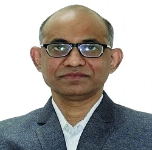
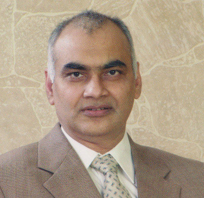

Dr Faizullah Khan

Dr Faizullah Khan (Managing director)
- Qualification: MS,MCH,ROBOTIC SURGERY GERMANY
- About: Dr. Faizulla Khan is a Urologist in Banjara Hills, Hyderabad and has an experience of 12 years in this field. Dr. Faizulla Khan practices at Virinchi Hospitals in Banjara Hills, Hyderabad and Udai Omni Hospital in Chapel Road, Hyderabad. He completed MBBS from Rajiv Gandhi University, Mangalore in 2007,MS - General Surgery from Sri Sidharatha University, Karnataka in 2012 and MCh - Urology from Dr. NTR University of Health Sciences Andhra Pradesh in 2015. He is a member of Indian Medical Association (IMA),Association of Surgeons of India (ASI) and Urology Society Of India. Some of the services provided by the doctor are: Urology Consultation,HIV Counselling,Direct Visual Internal Urethrotomy (DVIU),Surgery Of The Penis and Vasectomy etc.
Dr. Hidayatullah Khan

Dr. Hidayatullah Khan
- Qualification: MBBS,MS,MCH
About: Dr. Hidayatullah. G is a Urologist from Hyderabad and has an experience of 17 years in this field. Dr. Hidayatullah. G practices at Integro Hospitals at Rethibowli, Hyderabad. He completed MBBS from Deccan College of Medical Sciences, Hyderabad, MS - General Surgery from Osmania Medical College, Hyderabad and MCH - Urology from Nizam Institute of Medical Sciences,Hyderabad. He is a member of Medical Council of India (MCI). Some of the services provided by the doctor are: Urologic Oncology, Ureteroscopy (URS),Kidney Stone Treatment,Urinary Incontinence (Ui) Treatment and Urinary Tract Infection (UTI) etc.
Dr. Ahmed Hussain

Dr. Ahmed Hussain
- Qualification: MBBS, MD, (MRCP-UK), FAGE
- About: Dr. Mohammed Ahmed Hussain is General physician, Diabetologist, Thyroid disorders, Hypertension(BP),Fevers, Blood disorders, Lung diseases, Joint pains, Autoimmune diseases, Obesity and Infectious diseases. Dr. Mohammed Ahmed Hussain at Integro Hospitals at Rethibowli, Hyderabad. He completed MBBS From Gandhi Medical College, MD in General Medicine(Manipal University) and (MRCP-UK), FAGE
Dr. S.V.Subramanyam

Dr. S.V.Subramanyam
- Qualification: MBBS,MD,DNB,MISN
About: Dr. S.V.Subramanyam from Hyderabad is one of the most renowned Nephrologists in the area. The practitioner holds qualification in the capacity of MBBS , MD - Nephrology , F.S.R.H UK . The specialist has in-depth knowledge of related areas of specialization like Nephrologist/Renal Specialist etc. Countless locals in have placed immense trust in the practitioner over the years. Dr. S.V.Subramanyam.
Dr. Shabana Nazneen
Dr. Shabana Nazneen
- Qualification: MBBS, MD, DM
- About:Dr. Shabana Nazeen finished her MBBS, MD and DM in Gandhi Medical college.she is one of the top Nehrologist in hyderabad, has experience over 13 years, now practising in INTEGRO HOSPITAL Rethibowli Hyderabad .
Dr. Gabriel Sukumar Chinnam

Dr. Gabriel Sukumar Chinnam
- Qualification: MBBS, MS, FRCS(UK)
- About: Dr. Gabriel Sukumar Chinnam, Top Gastroenterologist in Hyderabad has an overall 19 years of experience in general surgery and surgical gastroenterology. He did his under graduation and postgraduate studies – M.S. (Surgery) from CMC, Vellore. He passed Diplomate of National Board (D.N.B.) in Surgery and MRCS from Royal College of Surgeons of England. Dr. Sukumar underwent higher surgical training in Australia after completing his postgraduation. Dr. Sukumar has vast experience in General Surgery, Surgical Gastroenterology, Surgical Oncology, Laparoscopic Surgery, Endoscopy & Colonoscopy, gained over his entire professional career. Dr. Sukumar also contributed in detailing his work in many national and international publications and books.
Dr. Poornima

Dr. Poornima
- Qualification: MBBS, MS
- About: Dr. D. B. Poornima Chowdary(LADY SURGEON) from Hyderabad has specialization in Surgical Gastroenterologist, Gastrointestinal surgeon, General surgeon, Laproscopic surgeon. she completed MBBS from Dr.NTR University of Health services, Diploma in Laproscopic surgery from France and Fellowship in Minimally Invasive Surgery In France. Consultant General & GI Surgeon and laparoscopic surgeon.
Dr. Adil Asfan

Dr. Adil Asfan
- Qualification: MBBS, MS, MCH
- About: Dr. Mohammed Adil Asfan is a well-known Surgical Gastroenterologist with 15 years of experience. His areas of expertise are Advanced laparoscopic surgery, Hepatopancreatobiliary Surgery, and Bariatric Surgery. After completing his MBBS from Osmania Medical College in 2006, he did MS in General Surgery from PGIMER, Chandigarh, in 2010, and MCh in GI Surgery from AIIMS, New Delhi, in 2015.Now practising at Integro Hospital .
Dr. Y. Rami Reddy
Dr. Y. Rami Reddy
- Qualification: MBBS, MS, DNB
- About: Y. Rami Reddy is a Consultant in Gastroenterology and Therapeutic Endoscopist. He has Worked 2 years as an assistant professor, department of gastroenterology. Postgraduate Institute of Medical Education and Research (PGIMER) Chandigarh
Dr. V.Sarala

Dr. V.Sarala
- Qualification: MBBS, MD
- About: Dr. V.Sarala is a Gynecologist in Santosh Nagar, Hyderabad Dr. V.Sarala practices at Sarvani Hospital in Santosh Nagar, Hyderabad and Ushodaya Hospital in Kishanbagh, Hyderabad. She completed MBBS from Osmania Medical College, Hyderabad in 1989 and MD - Obstetrics & Gynaecology from Osmania Medical College, Hyderabad in 1992. Some of the services provided by the doctor are: Quad Screen,Caesarean Section (C Section),Essure System,Mirena (Hormonal Iud) and Tubectomy/Tubal Ligation etc.
Dr. Ayesha Khaliq

Dr. Ayesha Khaliq
- Qualification:MBBS, MS
- About: Dr. Ayesha Khaliq has done MBBS from Gandhi Medical College and M.D from prestigious PGIMER, Chandigarh. She has 13 years vast experience in the field of obstetrics and gynecology from such a premier institute. She has expertise in the management of high-risk pregnancies, PCOD all gynae problems, infertility. Also, has expertise in doing all kinds of laparoscopy surgeries. She also worked as Senior Consultant at Muslim Maternity Hospital, Chaderghat. She is now working at Mythri Hospital,Mehdipatnam.
Dr. Nidhi bang pallod

Dr. Nidhi bang pallod
- Qualification:MBBS, MS
- About: Dr nidhi bang pallod is a renowened gynacologist in hyderabad and currently practises at Integro Hospital,Hyderabad.For the past 12 years ndhi bang pallod has pratised as a gynecologist obstetrician and gained proficient knowledge and skills in Segments. Dr nidhi ban pallod pursued a degree of MBBS and MS Obstetrics and Gynecology.
Dr. Bollineni Bhaskar Rao

Dr. Bollineni Bhaskar Rao
- Qualification:MBBS, MS
- About: A legend in cardiology, Dr. Bollineni Bhaskar Rao {MBBS,MS, DNB (CT Surgery)} is one of the very few Cardio-Thoracic Surgeons in the country, who performed over 30000 surgeries in his career spanning over last 25 years. After completing studies from India and abroad, Dr. Bhaskar Rao started his career in 1990 before turning into a healthcare entrepreneur in 2000. Dr. Bhaskar Rao's thirst, thrust and quest is to make medical facilities available to as many people as possible.
Dr. Md.kareemullah Khan
Dr. Md.kareemullah Khan
- Qualification: MBBS, MS
- About: Dr. Md.kareemullah Khan is a ENT/ Otorhinolaryngologist in Gachibowli, Hyderabad and has an experience of 12 years in this field. Dr. Md.kareemullah Khan practices at Care Hospitals in Gachibowli, Hyderabad. He completed MBBS from Deccan College of Medical Sciences, Hyderabad in 2004 and MS - ENT from Gandhi Medical College and Teaching Hospital in 2010.
Dr. Balachandra Reddy

Dr. Balachandra Reddy
- Qualification:MBBS, MS, MCH
- About: Dr. Balachandra Reddy is a Plastic Surgeon in Banjara Hills, Hyderabad and has an experience of 2 years in this field. Dr. Balachandra Reddy practices at Virinchi Hospitals in Banjara Hills, Hyderabad. He completed MCh - Plastic Surgery from Nizam Institute of Medical Sciences, Hyderabad in 2017,MS - General Surgery from Dr. NTR University of Health Sciences Andhra Pradesh in 2014 and MBBS from Dr. NTR University of Health Sciences Andhra Pradesh in 2007.